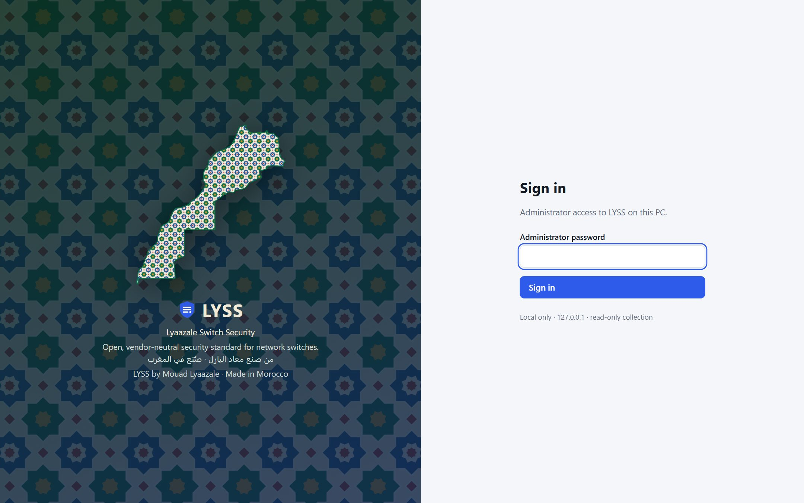
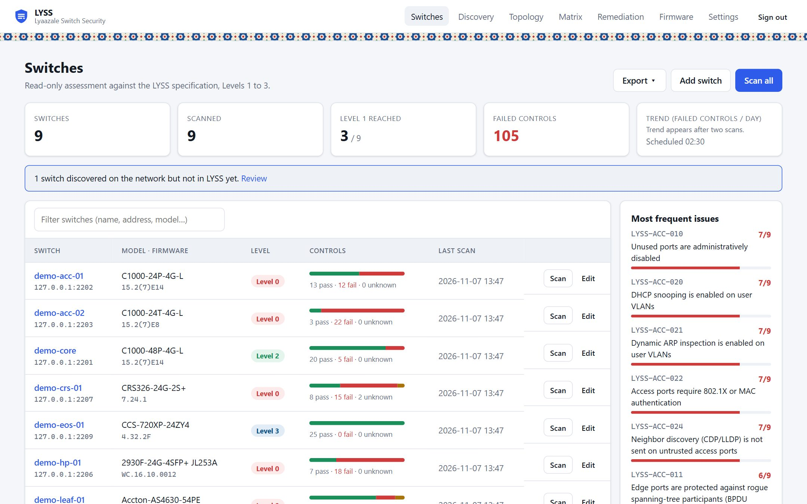
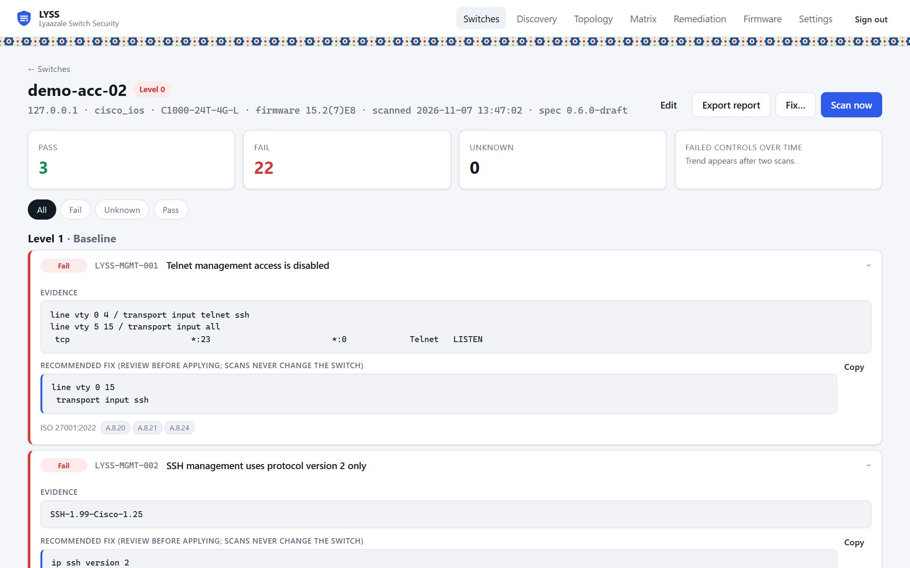
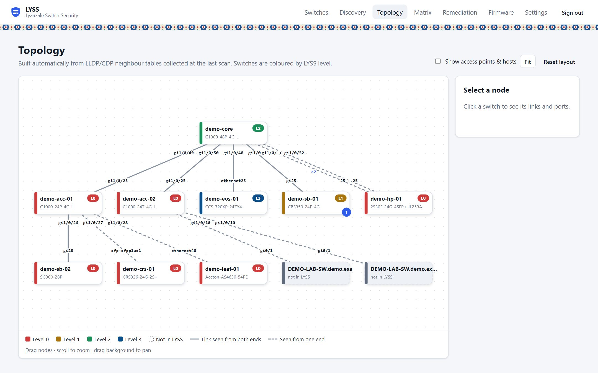
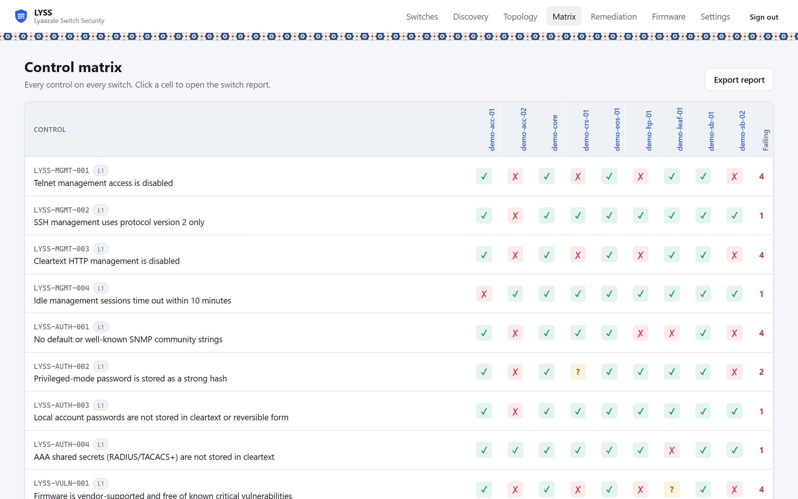
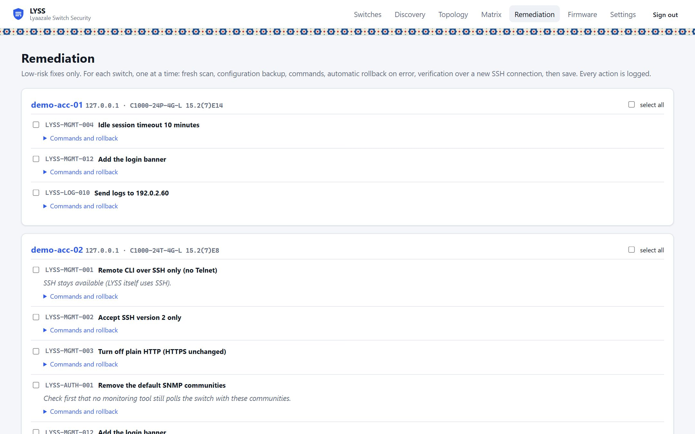
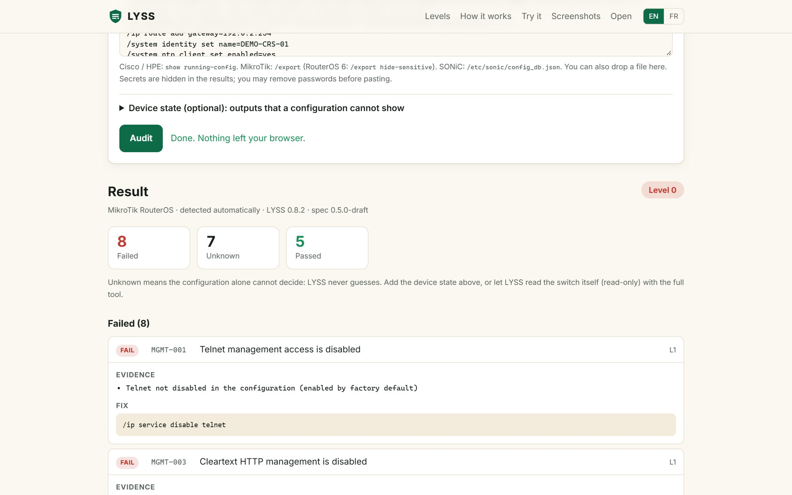

ScreenshotsCaptures d'écran
The LYSS tool, on a demo networkL'outil LYSS, sur un réseau de démonstration
Every name, address and result below is fictitious: nine simulated switches (Cisco IOS, Cisco Small Business, HPE Aruba, MikroTik RouterOS, SONiC, Arista EOS) created by LYSS's own demo mode. Click an image to enlarge it.Tous les noms, adresses et résultats ci-dessous sont fictifs : neuf switchs simulés (Cisco IOS, Cisco Small Business, HPE Aruba, MikroTik RouterOS, SONiC, Arista EOS) créés par le mode démonstration de LYSS. Cliquez sur une image pour l'agrandir.


Runs on your machineFonctionne sur votre poste
A local web interface protected by an administrator password. Credentials are encrypted and configurations never leave your network.Une interface web locale protégée par un mot de passe administrateur. Les identifiants sont chiffrés et les configurations ne quittent jamais votre réseau.


Fleet overviewVue d'ensemble du parc
Every switch with its model, firmware, conformance level and controls, plus the issues that affect most of the network.Chaque switch avec son modèle, son firmware, son niveau de conformité et ses contrôles, ainsi que les problèmes qui touchent le plus le réseau.


Evidence for every verdictUne preuve pour chaque verdict
The configuration lines and device state behind each result, the recommended fix and the ISO 27001 controls it supports. Secrets are always redacted.Les lignes de configuration et l'état de l'équipement derrière chaque résultat, la correction recommandée et les mesures ISO 27001 concernées. Les secrets sont toujours masqués.


Topology, built automaticallyTopologie construite automatiquement
From LLDP/CDP neighbour tables, coloured by conformance level. Switches that are on the network but not yet in LYSS appear too.À partir des tables de voisins LLDP/CDP, colorée par niveau de conformité. Les switchs présents sur le réseau mais pas encore dans LYSS apparaissent aussi.


Control matrixMatrice des contrôles
Every control on every switch in one table, to plan the work and follow progress.Tous les contrôles de tous les switchs dans un seul tableau, pour planifier les travaux et suivre les progrès.


Optional, safe remediationCorrection optionnelle et sûre
Off by default. You choose low-risk fixes, see their commands and rollback, and LYSS applies them one switch at a time with verification and automatic rollback.Désactivée par défaut. Vous choisissez des corrections à faible risque, voyez leurs commandes et leur retour arrière, et LYSS les applique switch par switch avec vérification et annulation automatique.


No access to the switches? Audit in your browserPas d'accès aux switchs ? Auditez dans votre navigateur
Paste a saved configuration on lyss.dev/audit.html: the same engine runs inside the page, and nothing is uploaded.Collez une configuration sauvegardée sur lyss.dev/audit.html : le même moteur s'exécute dans la page, et rien n'est envoyé.